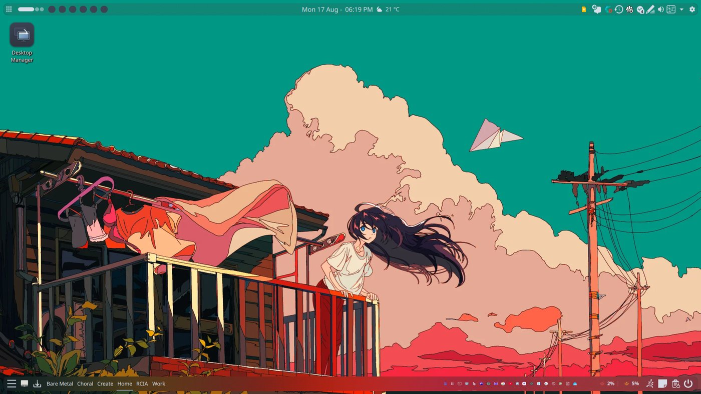

Desktop Manager is, first of all, a snapshot of a complete desktop: the Nordic / Nordic-bluish KDE Plasma 6 theme, the matching GTK/Qt styling, window decorations and KWin tiling scripts, the SDDM login screen, and Hyprland rices — bundled so a fresh machine can be made to look like this one from a single picker.
Theme restore targets KDE Plasma 6 and Hyprland on Arch / CachyOS. The SDDM stage needs sudo.
git clone https://github.com/janszafranski/desktop-manager.git ~/system-replica
cd ~/system-replica
./scripts/install.sh --dry-run # preview everything, change nothing
./scripts/install.sh # packages + files + sddm + servicesPrefer clicking? Everything here also installs from Desktop Manager › Apps. Each tool has an uninstall.sh beside its installer.